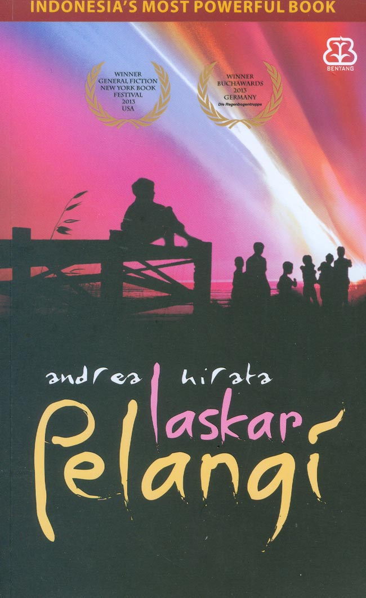
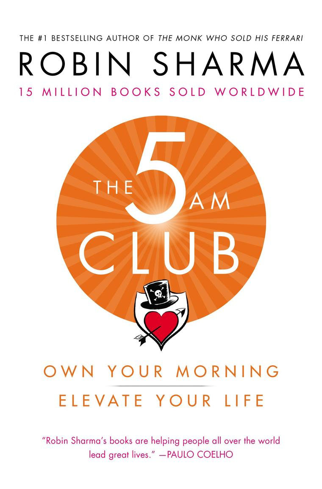
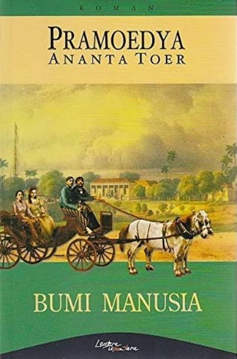

📚 Rekomendasi Per Kategori

Self-Help
Atomic Habits
Panduan membangun kebiasaan kecil yang menghasilkan perubahan besar dalam hidup secara konsisten.

Fiksi Lokal
Laskar Pelangi
Novel inspiratif tentang perjuangan anak-anak Belitung mengejar pendidikan di tengah keterbatasan.
Motivasi
Ikigai
Filosofi Jepang tentang menemukan makna hidup melalui perpaduan passion, misi, dan panggilan jiwa.

Sains Populer
Sapiens
Perjalanan sejarah umat manusia dari zaman purba hingga era modern yang diceritakan secara menarik.

Pengembangan Diri
The 5 AM Club
Pentingnya rutinitas pagi hari untuk meningkatkan produktivitas dan kualitas hidup secara menyeluruh.

Sastra
Bumi Manusia
Mahakarya sastra Indonesia yang mengisahkan perjuangan dan cinta di era kolonial Hindia Belanda.